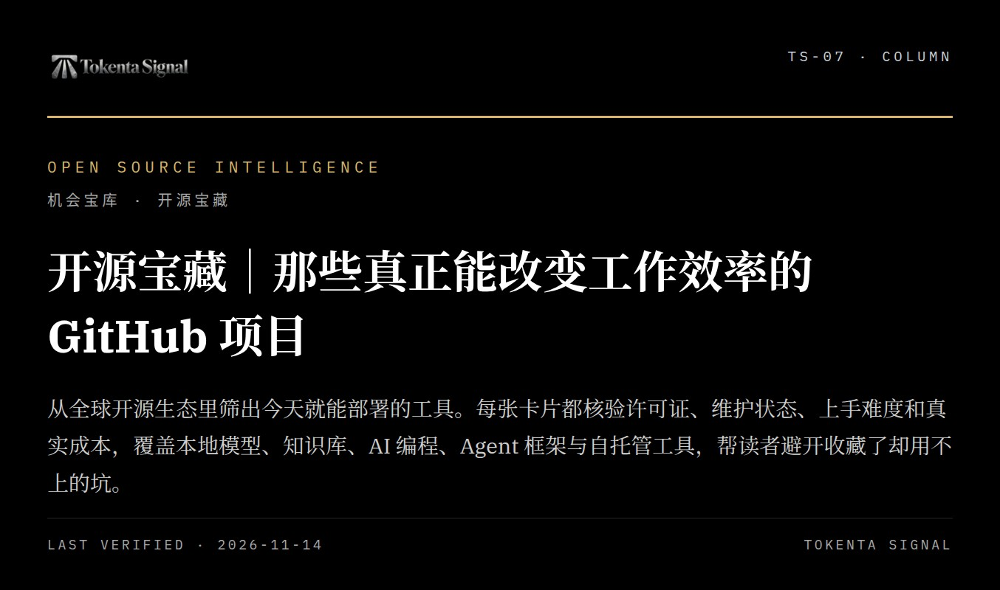
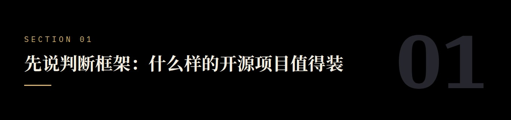
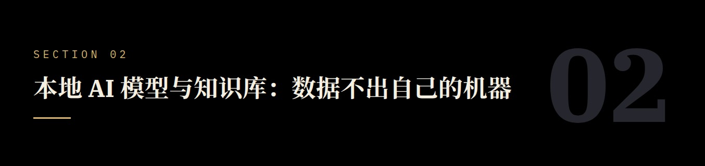
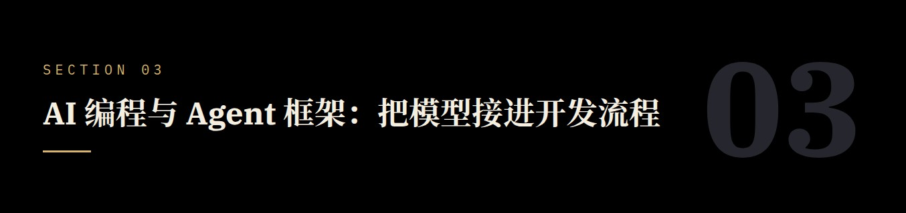
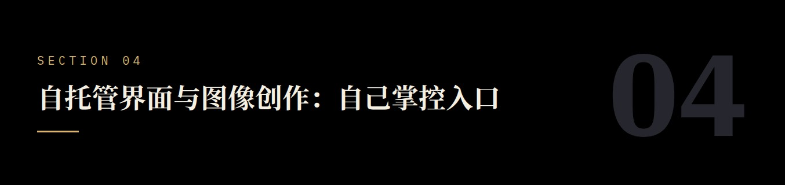

GitHub 上每天都有新项目冲上热门榜单，收藏夹很容易越攒越长，真正装上电脑并持续使用的工具却很少。开源宝藏这个栏目只做一件事，从全球开源生态里筛出开发者和团队今天就能部署、能解决具体问题的项目，给出核验过的许可证、维护状态和上手成本，帮读者省掉逐个试错的时间。
本栏目的选品范围包括八个方向，AI Agent 框架、自动化工具、开发者生产力、本地 AI 模型、AI Coding、数据处理、搜索与知识库、自托管工具。每期入选项目都要经过同一套判断框架核验，许可证含糊、长期无人维护，或部署门槛与实际收益明显不匹配的项目，不会进入推荐名单。读者可以把每期的卡片当作一份可以直接执行的清单，先看字段，再决定是否安装。

第一看维护信号。最近一次代码提交距今多久，版本发布是否连续，问题区里维护者是否还在回应，这三项比星标数可靠得多。本期核验时，多数入选项目的最近提交都在核验日前后两天以内，只有一个项目节奏明显放缓，卡片里会如实标注。星标反映的是关注度，维护节奏反映的才是这个项目今天是否还活着。
第二看许可证。MIT 和 Apache 2.0 这类宽松许可证允许商用和修改，使用边界最清楚。GPL 和 AGPL 带有传染性条款，把代码嵌入闭源产品或对外提供网络服务之前，要先评估随之而来的义务。还有一类项目采用自定义许可证，源代码公开可见，商用和品牌使用却另有限制，例如用户规模超过门槛后不得去除品牌标识，这类项目在卡片里会单独提示，不能只按开源二字理解。n8n 这类公平代码项目和 Dify 这类带附加条件的许可证项目，也属于需要逐字读原文的类别，本栏目后续会单独成文拆解。
第三看真实成本与安全。免费指的是不用付订阅费，本地运行要占用显存和内存，云端模型调用仍要付接口费用，自托管还要算上升级和备份的时间。安全上只从官方仓库和官方文档安装，警惕同名仿冒仓库，部署前先看项目申请的系统权限，处理私有文档的工具优先选择可以完全离线运行的方案。
第四看文档和可退出性。安装文档是否完整，配置能否导出，数据格式是否开放，决定了将来迁移的成本。一个项目即使当下好用，如果文档缺失、配置封闭，长期使用的风险也会上升。本栏目的卡片会把安装难度和已知风险写在明处，读者按自己的技术水平对照选择，宁可慢一步装对，也不要装完才发现无法维护。

本地运行是这一轮开源生态里最扎实的方向。模型权重、文档和对话记录都留在自己的硬件上，隐私边界清楚，也不受单个云厂商调价和停服的影响。代价是效果上限取决于本地硬件，七十亿到一百四十亿参数量级的模型，是当前个人电脑比较现实的区间。下面三个项目分别对应模型运行、文档问答和一体化工作台三种需求，读者按数据敏感程度和动手能力挑选。
Ollama
它解决什么问题 在个人电脑或服务器上一条命令下载并运行开源大模型，同时提供可供其他程序调用的本地接口
与同类产品的区别 上手门槛显著低于直接操作 llama.cpp 等底层推理引擎，模型的管理方式接近包管理器，命令行和接口两种用法都保留
安装和使用难度 低。官方安装包覆盖主流操作系统，安装后拉取模型即可运行
许可证 MIT
最近维护情况 最近提交 2026-11-14（UTC），核验当天仍在更新，维护活跃
适用人群 想在本地体验和调用开源模型的开发者与个人用户
运行成本 软件免费。成本来自本地硬件，较大的模型需要充足的内存或显存，纯本地运行没有接口费用
已知风险 实际能力取决于所选开源权重，与云端旗舰模型仍有差距。安装包和模型只从官方渠道获取
许可证与最近提交时间经 GitHub 接口核验，2026-11-14。
RAGFlow
它解决什么问题 把 PDF、表格、扫描件等复杂文档解析和切片，建成可以问答检索的知识库，面向企业文档场景
与同类产品的区别 强项在文档解析深度，对版式复杂的文档处理比用通用向量库临时拼凑的方案更完整，并提供可视化的知识库管理界面
安装和使用难度 中高。官方推荐用 Docker 部署，依赖组件较多，建议预留充足的内存和磁盘
许可证 Apache 2.0
最近维护情况 最近提交 2026-11-13（UTC），核验日前一天，维护活跃
适用人群 有大量内部文档需要问答检索的团队与研究人员
运行成本 软件免费。需要自备服务器或高配置电脑，调用外部大模型时另付接口费用，也可以接本地模型
已知风险 部署组件多，运维复杂度高于单机工具。解析效果要用自己的真实文档先做小规模测试，再决定是否全量导入
许可证与最近提交时间经 GitHub 接口核验，2026-11-14。
AnythingLLM
它解决什么问题 一体化的本地 AI 工作台，把文档、工作区和多个模型供应商整合在一个界面里，支持桌面端单机使用
与同类产品的区别 开箱程度高于 RAGFlow，更偏个人和小团队的现成工作台，桌面版无需先搭建服务器就能开始用
安装和使用难度 低到中。桌面版安装即可使用，服务器版支持多人部署
许可证 MIT
最近维护情况 最近提交 2026-11-13（UTC），维护活跃
适用人群 想快速拥有个人知识库助手的个人用户与小团队
运行成本 软件免费。使用云端模型时付相应接口费用，本地模型模式下只有硬件成本
已知风险 功能整合度高，深度定制能力弱于框架型项目。处理敏感文档时建议搭配本地模型，并确认外部接口的开关状态
许可证与最近提交时间经 GitHub 接口核验，2026-11-14。

AI Coding 工具的竞争已经从补全代码转向理解整个仓库。编辑器内的助手适合日常结对编程，命令行工具适合批量修改和自动化脚本，框架类项目面向要自己搭建 Agent 的团队。三者的选择取决于读者是想直接提效，还是想把模型能力嵌入自己的产品。卡片里对适用人群和难度的区分，比功能列表更值得先看。
Continue
它解决什么问题 在主流代码编辑器里提供开源的 AI 编程助手，支持代码补全、对话和按仓库上下文修改代码，后端模型可以自由切换
与同类产品的区别 模型选择完全开放，本地模型和多家云端模型都能接入，配置由使用者自己掌控，不绑定单一模型供应商
安装和使用难度 低。作为编辑器扩展安装，配置好模型即可使用
许可证 Apache 2.0
最近维护情况 最近提交 2026-11-14（UTC），维护活跃
适用人群 希望在现有编辑器里使用 AI 编程能力，又想保留模型选择权的开发者
运行成本 软件免费。云端模型按供应商价格付费，本地模型没有接口费用
已知风险 不同模型下的生成质量差异明显，需要用自己的代码库实测。团队使用前应确认所接模型是否符合内部合规要求
许可证与最近提交时间经 GitHub 接口核验，2026-11-14。
Aider
它解决什么问题 在命令行里与大模型结对编程，直接在 Git 仓库中跨多个文件修改代码，并生成可追溯的提交记录
与同类产品的区别 以终端和 Git 工作流为核心，修改过程完整留痕，适合脚本化和批量重构，这是编辑器型助手不擅长的场景
安装和使用难度 中。需要熟悉命令行和 Git，通过包管理工具安装并配置模型接口
许可证 Apache 2.0
最近维护情况 最近提交 2026-05-22（UTC），距核验日约六个月，更新节奏明显慢于本期其他项目，列入持续观察
适用人群 熟悉终端工作流，希望把 AI 修改纳入版本管理的开发者
运行成本 软件免费。主要成本是所调用模型的接口费用，长上下文任务的消耗较大
已知风险 维护节奏放缓是明确信号，新用户先小规模试用并关注后续版本。让它自动修改代码之前，务必确认仓库已有提交或备份
许可证与最近提交时间经 GitHub 接口核验，2026-11-14。维护间隔较长，本栏目保留收录但明确标注风险。
LangChain
它解决什么问题 为开发者提供搭建大模型应用和 Agent 的框架，把模型调用、工具使用、记忆和检索等环节做成标准化组件
与同类产品的区别 它面向要自己开发 AI 产品的人，提供的是可编程的组件库，生态规模和第三方集成数量在同类框架中处于前列
安装和使用难度 高。需要编程能力，适合有 Python 或 JavaScript 基础的开发者，普通用户无法把它当成成品直接使用
许可证 MIT
最近维护情况 最近提交 2026-11-14（UTC），维护活跃
适用人群 正在开发 Agent、智能问答或自动化工作流的工程师与技术团队
运行成本 框架本身免费。实际成本来自所调用的模型接口和部署服务器
已知风险 版本迭代快，接口变化频繁，生产项目应锁定版本。抽象层较厚，需求简单时直接调用模型接口可能更省维护成本
许可证与最近提交时间经 GitHub 接口核验，2026-11-14。

自托管的价值在于入口统一和数据自控。一个界面可以切换多个本地或云端模型，一套图像工作流可以复用和分享节点配置，团队不必在每个新工具上重新注册账号、重新适应操作习惯。这类项目通常对显卡和部署经验有一定要求，适合愿意花半天时间一次配好、然后长期使用的人。本节第二个项目的许可证带有附加条款，是本期最需要读者逐字看清的一条。
Open WebUI
它解决什么问题 为本地和云端模型提供统一的自托管聊天界面，常与 Ollama 搭配使用，支持多用户、知识库和扩展功能
与同类产品的区别 界面完整度和社区规模在同类自托管前端中突出，插件与函数扩展生态丰富
安装和使用难度 中。推荐用 Docker 部署，需要基本的容器使用经验
许可证 自定义许可证，以 BSD 3 Clause 为基础并附加品牌条款。仓库许可证原文规定，终端用户超过 50 人时不得去除或替换 Open WebUI 的品牌标识，除非取得企业授权。GitHub 接口因此将其标记为 NOASSERTION，它不属于标准 OSI 开源许可证
最近维护情况 最近提交 2026-11-14（UTC），维护活跃
适用人群 想为个人或小团队搭建统一模型入口的用户
运行成本 软件免费。成本为自托管服务器费用和所接模型的费用
已知风险 品牌条款对较大规模部署有实际约束，计划商用或做白标产品的团队，必须先读许可证原文或取得企业授权
许可证原文于 2026-11-14 经 GitHub 接口逐字读取核验，品牌条款为第四条。
ComfyUI
它解决什么问题 用节点式工作流生成和编辑图像，把每一步的参数可视化，支持复用和分享完整的工作流配置
与同类产品的区别 与一键出图的工具相比，它提供的是可编程的图像流水线，同一套节点图可以批量运行，结果可以精确复现
安装和使用难度 中高。需要理解节点连接逻辑，对显卡显存有明确要求
许可证 GPL 3.0，带有传染性条款，二次分发或嵌入闭源产品之前需要评估许可证义务
最近维护情况 最近提交 2026-11-15（UTC），核验时处于高频更新状态，维护活跃
适用人群 需要批量、可控地生成图像的设计师、内容团队和 AI 图像重度用户
运行成本 软件免费。主要成本是本地显卡硬件，使用云端显卡时按租用价格付费
已知风险 第三方节点插件质量参差不齐，安装前要核查来源。模型权重各自有独立许可证，商用前逐个确认
许可证与最近提交时间经 GitHub 接口核验，2026-11-14。

01 先读判断框架一节，再按自己的需求进对应小节挑项目，不要按顺序全部安装。
02 安装前点开卡片里的 GitHub 地址，对照许可证和最近提交两个字段复核一遍，项目状态变化很快，卡片是核验日的快照。
03 第一次部署先用测试数据和测试仓库试运行，确认效果和成本后再迁移正式文档与代码。
04 处理私有文档优先选本地模型方案，处理代码优先确认所接模型的数据政策。
05 发现卡片信息过期或项目状态变化，可以通过公众号后台留言反馈，本栏目会在下一期统一勘误。

SOURCES · 来源与核验
[1] Ollama 官方仓库与文档
[2] RAGFlow 官方仓库与文档站
[3] AnythingLLM 官方文档
[4] Continue 官方文档
[5] Aider 官方文档
[6] LangChain 官方文档
[7] Open WebUI 官方文档与许可证原文（仓库 LICENSE 文件）
[8] ComfyUI 官方仓库与文档
LAST VERIFIED · 2026-11-14
TOKENTA SIGNAL
Extracting signals from the noise. 本栏目内容来自公开来源并标注核验日期，不构成任何投资建议。
signal.tokenta.space · team@tokenta.space